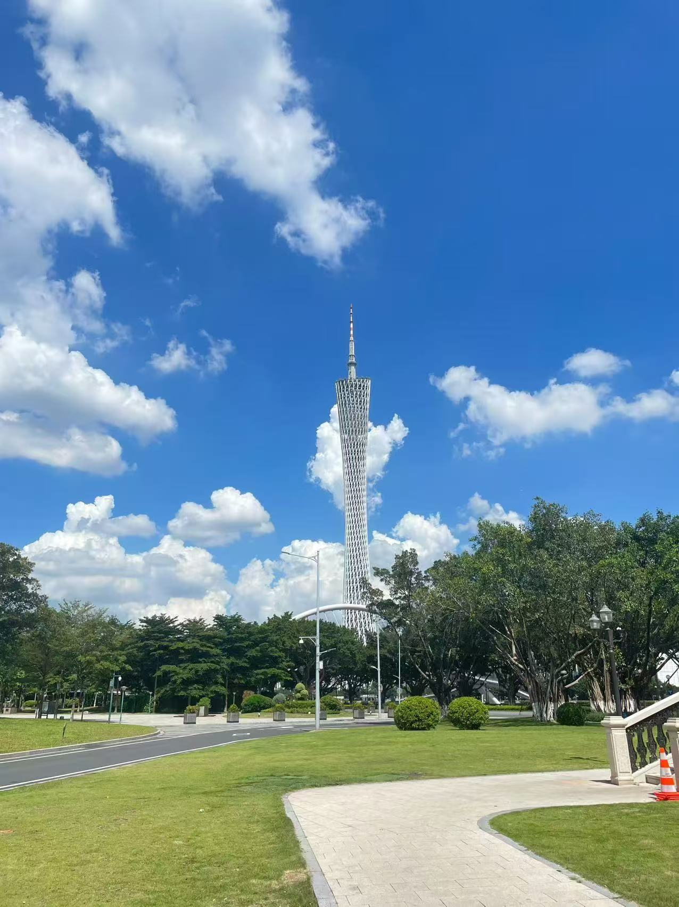
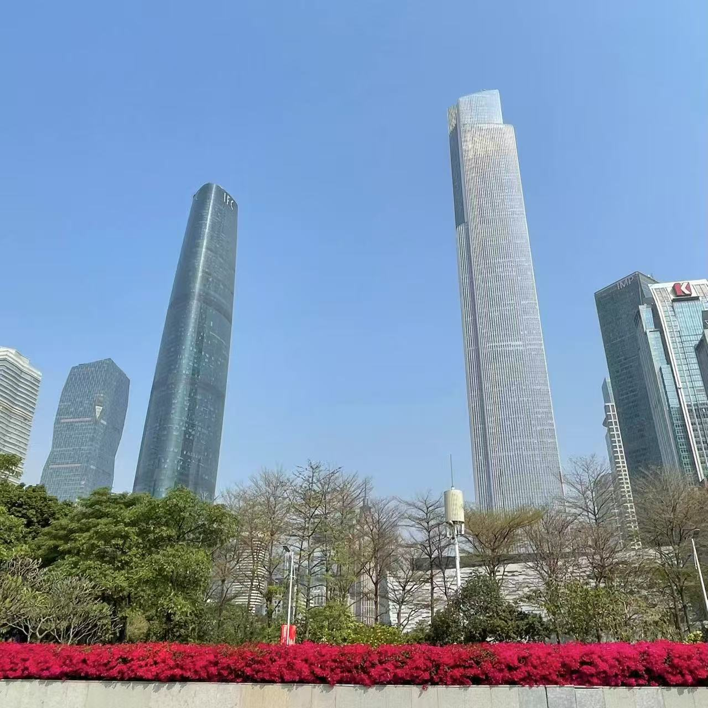
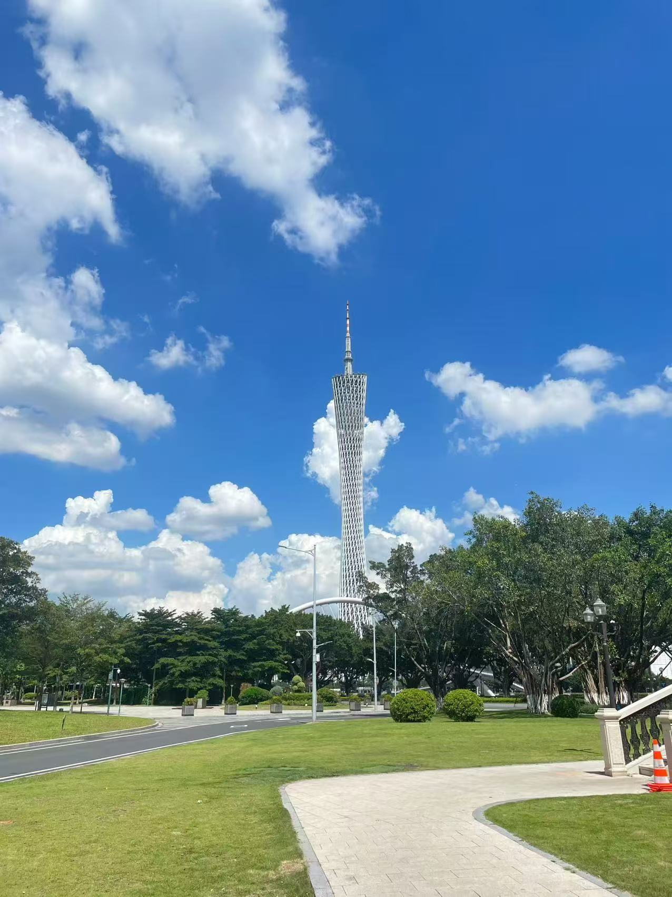
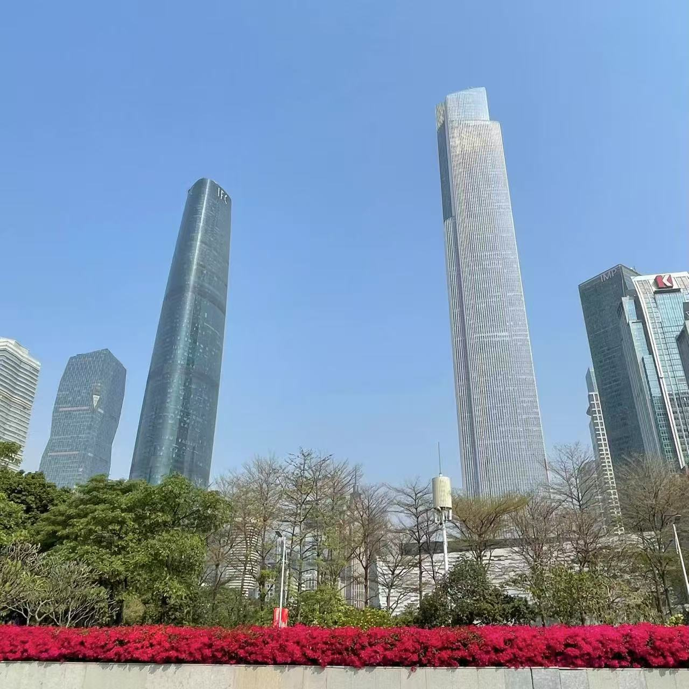

广州，简称穗， 别称羊城、花城 广东省省会、副省级市、中国国家中心城市、国际大都市、 国家三大综合性门户城市之一（与北京、上海并称“北上广”）。
地处中国南方、广东省中南部、珠江三角洲北缘，濒临南海，为国家综合交通枢纽，中国“南大门”。 社会经济文化影响力辐射东南亚，国际交往密切，外籍人士聚居，素有“第三世界首都”之称。
1911年广州“三·二九”起义打响辛亥革命第一枪，开启中国民主革命序幕。
中国最大、历史最悠久的对外通商口岸之一，海上丝绸之路起点，外贸基因深植血脉。
 
广州，简称穗， 别称羊城、花城 广东省省会、副省级市、中国国家中心城市、国际大都市、 国家三大综合性门户城市之一（与北京、上海并称“北上广”）。
地处中国南方、广东省中南部、珠江三角洲北缘，濒临南海，为国家综合交通枢纽，中国“南大门”。 社会经济文化影响力辐射东南亚，国际交往密切，外籍人士聚居，素有“第三世界首都”之称。
1911年广州“三·二九”起义打响辛亥革命第一枪，开启中国民主革命序幕。
中国最大、历史最悠久的对外通商口岸之一，海上丝绸之路起点，外贸基因深植血脉。
 广州历史介绍